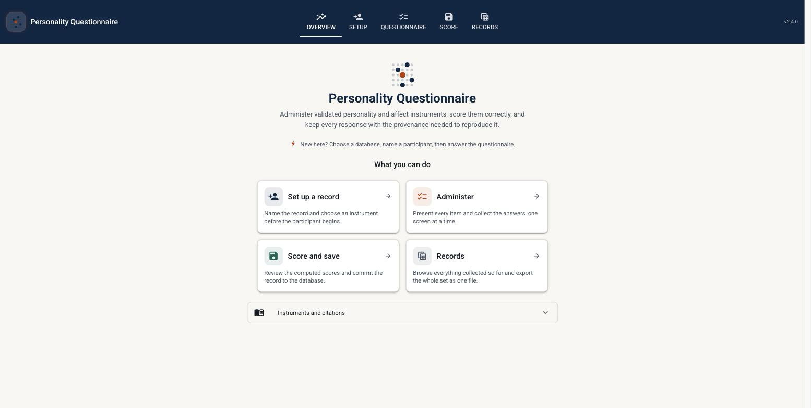

Administer, score and record validated personality and affect questionnaires

Collecting validated self-reports is the unglamorous half of an affective-computing pipeline. This started as a small helper for scoring BFI-2 and VAS-F responses in one experiment; it is now a full data-collection application, built around one idea: an instrument is data, not code. Items, response ranges, subscale membership and reverse keys are declared as values, and a single vectorised scorer turns responses into scores without knowing which questionnaire it is holding. Adding an instrument adds no arithmetic.
| Instrument | Items | Scores |
|---|---|---|
| BFI-2 — Big Five Inventory-2 | 60 | 5 domains, 15 facets |
| BFI-2-XS — Extra-Short Form | 15 | 5 domains |
| BFI-10 | 10 | 5 domains |
| PANAS — Positive and Negative Affect Schedule | 20 | Positive / Negative Affect |
| VAS-F — Visual Analogue Scale for Fatigue | 18 | Fatigue, Energy, composite |
Beyond the Python API and CLI, pq ui serves a local data-collection application with five
tabs: an overview, participant setup, the questionnaire itself — rendered as the authors published it,
radio buttons with the labelled response scale, sliders for visual-analogue items — the computed
scores, and every record collected so far with filters and export. It binds to
127.0.0.1 and makes no outbound request: participant self-reports are
consent-restricted, and a tool that cannot be reached from another machine is the honest default for
that kind of data. Two browser tabs are two independent participants, so one machine runs two stations
side by side.
higher_is polarity, so nothing has to be inferred from a name.PQ_DATABASE_URL.pip install "personality_questionnaire[ui]"
pq ui # http://127.0.0.1:8080Or from the command line directly:
pq list # what is available
pq info bfi2 # items, subscales, citation
pq run bfi2 --participant P01 # ask, score, and store
pq score bfi2 --input answers.csv # score a file
pq export --shape long --output study-a.csvNothing here encrypts the database.
Securing the machine the application runs on is the operator's responsibility. Stack: Python 3.12+, SQLAlchemy, MIT licensed.